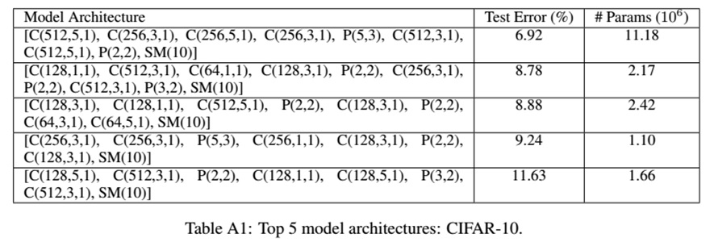
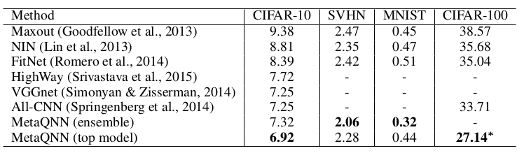

完成时间：2016.10-2017.01
整体概述
用基因个体的方式去描述网络结构，对应关系如下:
卷积神经网络模型（cnn）对应于生物个体，网络层(卷积层)对应于染色体，层的属性（卷积核的大小）对应于基因。
核心思想：通过种群的个体之间进行一些遗传操作获得不同的个体，个体代代相传，优胜劣汰的机制选出最佳个体，获得性能较好的模型结构。
基础原理详细介绍
CNN通用组成分析
对比目前人工设计的卷积神经网络，诸如LexNet网络，ImageNet,VGG16,VGG19,All-CNNs,NIN,ResNet,GoogleNet,FractalNet,DenseNet等结构，我们发现这些卷积神经网络的结构都是由一些基础的结构单元所组成。归纳一下卷积神经网络的主要结构由以下部分组成：
- 卷积层
卷积层含有的属性包括卷积层抽取特征的nb_filter个数，卷积核的大小（长和高的大小），初始化init方式，卷积移动stride步数，border_mode模式(same或者valid)。 - 激活函数层
激活函数层包含的属性取值为tanh,sigmoid,relu,relu的各种变体 - pool层
pool层的大小取值为pool的length长度，移动的步数stride，padding数目，还有就是pool类型比如maxp,average等。 - 全连接层
主要的变化点是隐层单元的个数以及激活函数的类型 - 分类层
同全连接一样只不过是隐层单元个数为类标签的个数 - Dropout层
正则化系数，主要指的是丢弃权值的比例 - BatchNormatization层
主要是每批训练的每个样本减去它的均值除以它的方差，再乘以一个alpha和beta系数，主要变化点为alpha和beta系数。 - Skip Connection.
主要指的是结构上的跳跃，从何凯明的文章以及后续许多带shortcuts结构可以知道是可以缓解梯度消失或梯度膨胀的问题，在低层与高层之间建立“捷径”。
完全利用以上结构进行组成的卷积神经网络结构的参数空间是巨大的，是一个NP问题。
假设一个d层神经网络，层的类型个数为s,每层含有k个属性，每个属性的取值为t个，那么其搜索空间的范围为：$(skt)^d$ , 这个数字比较的大，比如针对10层的神经网络，5种类型层，每层含有3个属性，每个属性取值5个，那么结构的个数为$75^{10}=10^{17.8}$ 。这个空间的搜索范围就比较大了。
为了进一步减少空间的搜索范围和搜索时间，需要做了一下简单的处理：
1. 卷积层中由于属性较多，stride固定设置为1， border_mode模式设置为same即经过卷积不改变大小，卷积层的权值初始化方式为随机取值。
2. 激活函数的使用过程中只是在卷积层使用，默认和卷积层绑定，理论上如果加入BN操作需要剥离开，约定激活函数在全连接层使用relu,分类层使用softmax层激活函数。
3. 使用的Dropout用于全连接层，设定固定值0.5
4. Poolng层设置为2，strides的大小等于pooling的大小，另外使用的是maxpling.
5. 不考虑Skip-Connnection和BatchNormatization操作，简化搜索的空间
6. 全连接层默认固定为512个隐层神经单元。
7. 分类层上加一个正则化约束因子L2,防止过拟合
8. 训练时迭代次数设置100次，如果10次性能不提高，终止训练。
综上，模型探索中可以变化点主要来自于卷积层的filter个数的大小和maxpling的结合情况。这里filter个数设置为16,32,48,96,128,196,256,512,还有就是加入pooling操作。
针对10层模型，不考虑pooling，上面8种filter的搜索空间的个数为：8^10 ，相对而言训练的模型的个数还是比较多的。在实际实施过程中，我们采取的是将这8种filter划分成多组5个filter分别进行训练，减少参数搜索的空间，最后再将不同组的进化结果进行汇总。
基础操作
基础操作定义
1. 自身复制. 主要是借鉴类似于vgg或者ResNet等结构，为了产生复杂的结构都是像conv+conv+maxp等类似block的结构不断的重复复制所产生。 2. 交叉组合。 以个体序列S1=a1_a2_a3_a4和个体序列S2=b1_b2_b3_b4为例,它们进行交叉组合的种类是比较多的， 这里采用的策略是：随机在个体序列S1和S2之间选择交叉点p1,p2.假设p1=a2,p2=b3,那么它们产生的交叉个体为： a1_a2_b3_b4, a1_a2_b1_b2, b1_b2_a1_a2, b1_b2_a3_a4 这四个交叉组合个体。 3. 变异操作。 假设个体的序列为a1_a2_a3_a4，那么随机产生一个随机点，比如说a2,这里有两种情况： 如果a2是一个maxp,那么变异操作保持不变， 如果是conv,filter个数是f1，那么随机在之前的filter集合中S去掉f1,即S-f1中任意的一个元素.进化的性能评价指标：
性能的评价指标是单个个体（模型）的训练获得的性能得分值，用于筛选模型好坏的度量。
考虑到模型训练具有一定的随机性使用比率进行度量，即两个模型的得分为s1,s2,如果s1>s2 && abs(s1-s2)/s2>r， 则认为s1的性能比s2好。
基本步骤
进化的整个过程主要分为两步：
step1. 初始步。
根据设置的初始种群大小L，随机均匀的散落初始个体（有单个的基因组成比如conv(12),maxp）到L×L的初始种群中，针对这L×L个个体分别进行训练，得到一个性能得分,填充整个L×L个空间。
- step2. 进化步。1234567891011121. 随机选择一个个体S1,以S1为中心点选择一个半径为d的局部种群，随机在d*d-1个局部种群中选择一个个体S2.这里假设S1的模型序列为a1_a2_a3_a4,S2的序列为b1_b2_b3_b42. 自身复制。以中心点S1进行自身复制操作产生一个新的个体S3，进行训练获得其性能得分假设为s_3.3. 进行交叉组合。如上面提到的操作部分进行随机的交叉组合产生4个个体，分别获得其性能得分假设为c1,c2,c3,c4.4. 选择较好的组合或者自身复制个体，记最好的性能得分为max_c，即max_c=max{s3,c1,c2,c3,c4}。这时可能出现如下三种情况：a. 如果max_c比s1的性能要差,那么直接跳到step2,进行下一次进化操作b. 如果max_c比s1的性能要好，但比s2的性能要差，这时max_c的结构替换掉s1的结构，那么需要进行第5步变异步c. 如果max_c比s1的性能要好，也比s2的性能要好，这时max_c的结构替换掉s1的结构，同时也替换掉s2的结构，那么需要进行第5步变异步操作。5. 变异步操作。去除s1和s2的局部种群中除去s1,s2外随机选择出两个最差的个体l1,l2,如变异操作描述那样，针对max_c的结构进行实施变异操作。
CNN网络结构生成在图片分类中应用
相关参数和模型的设置
数据集
CIFAR10数据集，50000训练和10000测试，10个类别。
单次训练的参数统一设置。
- 训练算法的选择： 带动量的随机梯度下降算法，使用nesterov进行初始化，初始学习率设置为0.1，动量因子0.9，衰减因子设置为1e-6。 - 误差函数 误差函数选择交叉熵，度量指标为准确率 - 结构参数： 训练次数设置100次，10次性能不提高终止训练。 固定模型的全连接层的隐层单元为512个，dropout=0.5，分类层标签数为10。进化过程参数设置
- 基础算子的选择： 卷积层的filter选择了16，32,64,96,128,196,224,256,512. pooling层，默认设为2,stride设置也为2 - 进化次数设置150次数据处理说明
- 数据增强: 进行旋转操作，水平和竖直方向进行平移操作 - 数据处理: 未加入零均值规范化处理进化过程说明
- 在实际运行过程中由于将不同种类型的filter和maxp加在一起去探索网络结构和网络结构的参数，这样的参数空间比较大，采取的策略是将filter划分成多份，进行多次进化，节省总的参数搜索空间，再将最终结果汇总。 - 模型开始的时候不适合将maxp开始，统一处理第一层以卷积层开始。 - CIFAR10数据集上有增强和非增强的操作，考虑到进行增强操作比较耗时，我们进行实验时在非增强的数据集上进行实验。
相关训练结果展示
非增强的结果展示。
实际过程中训练了大约957个实例，选择5个较好的模型如下：
model-0-'0.8138' model-1-'0.8067' model-2-'0.8064' model-3-'0.8046' model-29-'0.7944'
备注:模型标号对应的结构参见模型附录B部分
这里实验结果中是非增强的实验效果，数据处理这块，未加入零均值规范化处理和数据增强。
模型按照filter拆分了多组结果比如filter个数为{16，32,64,96,128}，{32,64,96,128，192}，{32,64,128,256,512}等多组.
CIFAR10进行非增强的参数调优
选择训练的模型（model-29-‘0.7944’）进行一定程度的性能调优，调优过程如下
数据规范化处理
原始模型能达到0.8324
零均值规范化处理和学习率动态改变(两次调整,10次性能不提高学习率就缩小为原来的0.1)
性能能提高到0.8524.
- 其它操作。
比如加入BN，梯度剪切，全连接层调节，dropout调节等，性能影响不太.
由于硬件资源的原因，为了能得到增强操作的结果，我们直接进行在非增强的模型结构进行增强操作，而在非增强结构中进行直接的增强训练发现，非增强:0.7944,增强最好结果是0.9196，非增强:0.8138,增强最好结果是0.9169，增强和非增强的效果并非保持一致的，另外考虑非增强和增强操作可能会导致结构上的差别，我们选择非增强的最好的30个模型进行增强操作重新训练，训练结果如下部分。
CIFAR10进行增强操作选择最优结果
实验结果
直接进行数据增强和学习率的调整，选择top-5个模型的机构编号及性能如下：

注：模型标号对应的结构参见模型附录B部分
结果对比
对比一下MIT的利用强化学习生成网络结构的实验结果为：

但从数据上看，我们的实验效果最好的误差率为7.62，其结果要比要比highway，maxout,FitNet等人工设计的结构要好，比VGG和All-CNNs略差。
实验分析
从上面结果看，其生成的结构和人工涉及的结构差异比较大，存在conv_conv_conv_maxp，conv_conv_maxp,conv_conv_conv_conv_maxp等结构，其具体的filter个数结构都不一样，人工很难去设计这样的结构。
从生成结构的层数看，VGG结构最少是16层，我们的结构是10个卷积层外加一个全连接和分类层，共12层，层数要比其少。
从参数规模上看，生成top-30个模型生成的模型基本上在1.2M-13M的规模，top-5个参数的规模约5M。
相关实验经验总结
相关问题及处理策略
CNN网络大小不够用的情况，进行了reshape操作
节省时间，采用缓存模型的策略，避免了多余的训练
- 性能比较的地方使用了比率
- 种群结束的条件使用了次数和最好和最差的的绝对值。
相关尝试和经验
关键因素
- 数据增强影响比较大
- 对图片进行零均值规范化处理影响比较大。
- 学习率动态的改变影响较大。
非关键因素
- 全连接层可以变为GlobalAvgPooling，性能提高不大
- 学习策略的改变比如adam或者rmsprop的提升并不大
- 加入BN和Skip-Connnection在深层的时候有一点提升，浅层的时候影响不大
- 在训练的CONV权重上加入规范化处理.W_constraint = maxnorm(2)
- 全连接层大小修改以及梯度剪切的处理性能也变化不大。
模型附录
A. 非增强的30个模型结构。
model-0,model structure:('init-0', '0.8138', [('conv', [('nb_filter', 128)]), ('conv', [('nb_filter', 192)]), ('maxp', [('pool_size', 2)]), ('conv', [('nb_filter', 128)]), ('conv', [('nb_filter', 192)]), ('maxp', [('pool_size', 2)]), ('conv', [('nb_filter', 128)]), ('conv', [('nb_filter', 192)]), ('maxp', [('pool_size', 2)]), ('conv', [('nb_filter', 128)]), ('maxp', [('pool_size', 2)]), ('conv', [('nb_filter', 128)]), ('conv', [('nb_filter', 192)]), ('maxp', [('pool_size', 2)]), ('conv', [('nb_filter', 128)]), ('conv', [('nb_filter', 192)]), ('maxp', [('pool_size', 2)]), ('conv', [('nb_filter', 128)]), ('conv', [('nb_filter', 192)]), ('maxp', [('pool_size', 2)])]) model-1,model structure:('init-1', '0.8067', [('conv', [('nb_filter', 32)]), ('conv', [('nb_filter', 128)]), ('conv', [('nb_filter', 192)]), ('maxp', [('pool_size', 2)]), ('conv', [('nb_filter', 128)]), ('conv', [('nb_filter', 192)]), ('maxp', [('pool_size', 2)]), ('conv', [('nb_filter', 192)]), ('maxp', [('pool_size', 2)])]) model-2,model structure:('init-2', '0.8064', [('conv', [('nb_filter', 32)]), ('conv', [('nb_filter', 192)]), ('conv', [('nb_filter', 192)]), ('maxp', [('pool_size', 2)]), ('conv', [('nb_filter', 128)]), ('conv', [('nb_filter', 192)]), ('maxp', [('pool_size', 2)]), ('conv', [('nb_filter', 128)]), ('conv', [('nb_filter', 192)]), ('conv', [('nb_filter', 192)]), ('maxp', [('pool_size', 2)]), ('conv', [('nb_filter', 128)]), ('conv', [('nb_filter', 192)]), ('maxp', [('pool_size', 2)])]) model-3,model structure:('init-3', '0.8046', [('conv', [('nb_filter', 16)]), ('conv', [('nb_filter', 192)]), ('maxp', [('pool_size', 2)]), ('conv', [('nb_filter', 128)]), ('conv', [('nb_filter', 192)]), ('maxp', [('pool_size', 2)]), ('conv', [('nb_filter', 128)]), ('conv', [('nb_filter', 192)]), ('maxp', [('pool_size', 2)]), ('conv', [('nb_filter', 128)]), ('conv', [('nb_filter', 192)]), ('maxp', [('pool_size', 2)]), ('conv', [('nb_filter', 192)]), ('maxp', [('pool_size', 2)])]) model-4,model structure:('init-4', '0.8017', [('conv', [('nb_filter', 32)]), ('conv', [('nb_filter', 192)]), ('conv', [('nb_filter', 192)]), ('maxp', [('pool_size', 2)]), ('conv', [('nb_filter', 128)]), ('conv', [('nb_filter', 192)]), ('maxp', [('pool_size', 2)]), ('maxp', [('pool_size', 2)]), ('conv', [('nb_filter', 128)]), ('conv', [('nb_filter', 48)]), ('maxp', [('pool_size', 2)])]) model-5,model structure:('init-5', '0.8016', [('conv', [('nb_filter', 32)]), ('conv', [('nb_filter', 128)]), ('conv', [('nb_filter', 192)]), ('maxp', [('pool_size', 2)]), ('conv', [('nb_filter', 128)]), ('conv', [('nb_filter', 192)]), ('maxp', [('pool_size', 2)]), ('conv', [('nb_filter', 32)]), ('conv', [('nb_filter', 128)]), ('conv', [('nb_filter', 192)]), ('maxp', [('pool_size', 2)]), ('conv', [('nb_filter', 128)]), ('conv', [('nb_filter', 192)]), ('maxp', [('pool_size', 2)])]) model-6,model structure:('init-6', '0.8015', [('conv', [('nb_filter', 64)]), ('conv', [('nb_filter', 512)]), ('maxp', [('pool_size', 2)]), ('conv', [('nb_filter', 512)]), ('conv', [('nb_filter', 256)]), ('maxp', [('pool_size', 2)])]) model-7,model structure:('init-7', '0.8015', [('conv', [('nb_filter', 32)]), ('conv', [('nb_filter', 128)]), ('conv', [('nb_filter', 192)]), ('maxp', [('pool_size', 2)]), ('conv', [('nb_filter', 128)]), ('conv', [('nb_filter', 192)]), ('maxp', [('pool_size', 2)]), ('maxp', [('pool_size', 2)]), ('conv', [('nb_filter', 128)])]) model-8,model structure:('init-8', '0.8008', [('conv', [('nb_filter', 32)]), ('conv', [('nb_filter', 128)]), ('conv', [('nb_filter', 192)]), ('maxp', [('pool_size', 2)]), ('conv', [('nb_filter', 128)]), ('conv', [('nb_filter', 192)]), ('maxp', [('pool_size', 2)]), ('conv', [('nb_filter', 128)]), ('conv', [('nb_filter', 192)])]) model-9,model structure:('init-9', '0.8007', [('conv', [('nb_filter', 16)]), ('conv', [('nb_filter', 192)]), ('maxp', [('pool_size', 2)]), ('conv', [('nb_filter', 128)]), ('maxp', [('pool_size', 2)]), ('conv', [('nb_filter', 128)]), ('conv', [('nb_filter', 192)]), ('maxp', [('pool_size', 2)])]) model-10,model structure:('init-10', '0.8002', [('conv', [('nb_filter', 128)]), ('conv', [('nb_filter', 192)]), ('maxp', [('pool_size', 2)]), ('conv', [('nb_filter', 128)]), ('conv', [('nb_filter', 192)]), ('maxp', [('pool_size', 2)]), ('conv', [('nb_filter', 128)]), ('conv', [('nb_filter', 192)]), ('maxp', [('pool_size', 2)]), ('conv', [('nb_filter', 128)]), ('conv', [('nb_filter', 192)]), ('maxp', [('pool_size', 2)])]) model-11,model structure:('init-11', '0.7997', [('conv', [('nb_filter', 128)]), ('conv', [('nb_filter', 192)]), ('conv', [('nb_filter', 128)]), ('conv', [('nb_filter', 192)]), ('maxp', [('pool_size', 2)]), ('conv', [('nb_filter', 128)]), ('conv', [('nb_filter', 192)]), ('maxp', [('pool_size', 2)]), ('conv', [('nb_filter', 128)]), ('conv', [('nb_filter', 192)]), ('maxp', [('pool_size', 2)]), ('conv', [('nb_filter', 128)]), ('maxp', [('pool_size', 2)]), ('conv', [('nb_filter', 128)]), ('conv', [('nb_filter', 192)]), ('maxp', [('pool_size', 2)])]) model-12,model structure:('init-12', '0.7996', [('conv', [('nb_filter', 128)]), ('conv', [('nb_filter', 192)]), ('maxp', [('pool_size', 2)]), ('conv', [('nb_filter', 128)]), ('conv', [('nb_filter', 192)]), ('maxp', [('pool_size', 2)]), ('conv', [('nb_filter', 128)]), ('conv', [('nb_filter', 192)]), ('maxp', [('pool_size', 2)]), ('conv', [('nb_filter', 128)]), ('conv', [('nb_filter', 128)]), ('conv', [('nb_filter', 192)])]) model-13,model structure:('init-13', '0.7995', [('conv', [('nb_filter', 16)]), ('conv', [('nb_filter', 192)]), ('maxp', [('pool_size', 2)]), ('conv', [('nb_filter', 128)]), ('conv', [('nb_filter', 192)]), ('maxp', [('pool_size', 2)]), ('conv', [('nb_filter', 128)]), ('conv', [('nb_filter', 192)]), ('maxp', [('pool_size', 2)]), ('conv', [('nb_filter', 128)]), ('conv', [('nb_filter', 192)]), ('maxp', [('pool_size', 2)]), ('conv', [('nb_filter', 128)]), ('conv', [('nb_filter', 192)])]) model-14,model structure:('init-14', '0.7995', [('conv', [('nb_filter', 32)]), ('conv', [('nb_filter', 192)]), ('conv', [('nb_filter', 192)]), ('maxp', [('pool_size', 2)]), ('conv', [('nb_filter', 128)]), ('conv', [('nb_filter', 192)]), ('maxp', [('pool_size', 2)]), ('conv', [('nb_filter', 192)]), ('maxp', [('pool_size', 2)]), ('conv', [('nb_filter', 128)]), ('conv', [('nb_filter', 192)]), ('maxp', [('pool_size', 2)]), ('conv', [('nb_filter', 128)]), ('conv', [('nb_filter', 192)]), ('maxp', [('pool_size', 2)])]) model-15,model structure:('init-15', '0.7992', [('conv', [('nb_filter', 32)]), ('conv', [('nb_filter', 192)]), ('conv', [('nb_filter', 192)]), ('maxp', [('pool_size', 2)]), ('conv', [('nb_filter', 128)]), ('conv', [('nb_filter', 192)]), ('maxp', [('pool_size', 2)]), ('maxp', [('pool_size', 2)]), ('conv', [('nb_filter', 128)]), ('conv', [('nb_filter', 192)]), ('maxp', [('pool_size', 2)])]) model-16,model structure:('init-16', '0.7989', [('conv', [('nb_filter', 16)]), ('conv', [('nb_filter', 192)]), ('maxp', [('pool_size', 2)]), ('conv', [('nb_filter', 128)]), ('conv', [('nb_filter', 192)]), ('maxp', [('pool_size', 2)]), ('conv', [('nb_filter', 128)]), ('conv', [('nb_filter', 64)]), ('maxp', [('pool_size', 2)]), ('conv', [('nb_filter', 128)]), ('conv', [('nb_filter', 192)]), ('maxp', [('pool_size', 2)]), ('conv', [('nb_filter', 192)]), ('maxp', [('pool_size', 2)])]) model-17,model structure:('init-17', '0.7981', [('conv', [('nb_filter', 128)]), ('conv', [('nb_filter', 192)]), ('maxp', [('pool_size', 2)]), ('conv', [('nb_filter', 128)]), ('conv', [('nb_filter', 192)]), ('maxp', [('pool_size', 2)]), ('conv', [('nb_filter', 128)]), ('conv', [('nb_filter', 192)]), ('maxp', [('pool_size', 2)]), ('conv', [('nb_filter', 256)]), ('maxp', [('pool_size', 2)]), ('conv', [('nb_filter', 256)]), ('maxp', [('pool_size', 2)])]) model-18,model structure:('init-18', '0.7979', [('conv', [('nb_filter', 256)]), ('conv', [('nb_filter', 512)]), ('maxp', [('pool_size', 2)]), ('conv', [('nb_filter', 512)]), ('conv', [('nb_filter', 256)]), ('maxp', [('pool_size', 2)])]) model-19,model structure:('init-19', '0.7975', [('conv', [('nb_filter', 128)]), ('conv', [('nb_filter', 192)]), ('maxp', [('pool_size', 2)]), ('conv', [('nb_filter', 128)]), ('conv', [('nb_filter', 192)]), ('maxp', [('pool_size', 2)]), ('conv', [('nb_filter', 128)]), ('conv', [('nb_filter', 192)]), ('maxp', [('pool_size', 2)]), ('conv', [('nb_filter', 512)]), ('maxp', [('pool_size', 2)])]) model-20,model structure:('init-20', '0.7969', [('conv', [('nb_filter', 16)]), ('conv', [('nb_filter', 192)]), ('maxp', [('pool_size', 2)]), ('conv', [('nb_filter', 128)]), ('conv', [('nb_filter', 192)]), ('maxp', [('pool_size', 2)]), ('conv', [('nb_filter', 128)]), ('conv', [('nb_filter', 192)]), ('maxp', [('pool_size', 2)]), ('conv', [('nb_filter', 128)]), ('conv', [('nb_filter', 192)]), ('maxp', [('pool_size', 2)])]) model-21,model structure:('init-21', '0.7967', [('conv', [('nb_filter', 128)]), ('conv', [('nb_filter', 192)]), ('conv', [('nb_filter', 128)]), ('conv', [('nb_filter', 192)]), ('maxp', [('pool_size', 2)]), ('conv', [('nb_filter', 128)]), ('conv', [('nb_filter', 192)]), ('maxp', [('pool_size', 2)]), ('conv', [('nb_filter', 128)]), ('conv', [('nb_filter', 192)]), ('maxp', [('pool_size', 2)]), ('conv', [('nb_filter', 128)])]) model-22,model structure:('init-22', '0.7964', [('conv', [('nb_filter', 128)]), ('conv', [('nb_filter', 192)]), ('maxp', [('pool_size', 2)]), ('conv', [('nb_filter', 128)]), ('conv', [('nb_filter', 192)]), ('maxp', [('pool_size', 2)]), ('conv', [('nb_filter', 192)]), ('maxp', [('pool_size', 2)])]) model-23,model structure:('init-23', '0.7964', [('conv', [('nb_filter', 128)]), ('conv', [('nb_filter', 192)]), ('maxp', [('pool_size', 2)]), ('conv', [('nb_filter', 128)]), ('maxp', [('pool_size', 2)]), ('conv', [('nb_filter', 128)]), ('conv', [('nb_filter', 192)]), ('maxp', [('pool_size', 2)])]) model-24,model structure:('init-24', '0.7956', [('conv', [('nb_filter', 512)]), ('conv', [('nb_filter', 256)]), ('maxp', [('pool_size', 2)]), ('conv', [('nb_filter', 512)]), ('conv', [('nb_filter', 256)]), ('maxp', [('pool_size', 2)]), ('conv', [('nb_filter', 256)]), ('maxp', [('pool_size', 2)])]) model-25,model structure:('init-25', '0.7955', [('conv', [('nb_filter', 128)]), ('conv', [('nb_filter', 192)]), ('maxp', [('pool_size', 2)]), ('conv', [('nb_filter', 128)]), ('conv', [('nb_filter', 192)]), ('maxp', [('pool_size', 2)]), ('conv', [('nb_filter', 128)]), ('conv', [('nb_filter', 192)]), ('maxp', [('pool_size', 2)]), ('conv', [('nb_filter', 128)]), ('conv', [('nb_filter', 192)]), ('maxp', [('pool_size', 2)]), ('conv', [('nb_filter', 128)]), ('conv', [('nb_filter', 192)])]) model-26,model structure:('init-26', '0.7947', [('conv', [('nb_filter', 128)]), ('conv', [('nb_filter', 192)]), ('maxp', [('pool_size', 2)]), ('conv', [('nb_filter', 128)]), ('conv', [('nb_filter', 192)]), ('maxp', [('pool_size', 2)]), ('conv', [('nb_filter', 128)]), ('conv', [('nb_filter', 192)]), ('maxp', [('pool_size', 2)]), ('conv', [('nb_filter', 128)]), ('conv', [('nb_filter', 192)])]) model-27,model structure:('init-27', '0.7945', [('conv', [('nb_filter', 64)]), ('conv', [('nb_filter', 256)]), ('maxp', [('pool_size', 2)]), ('conv', [('nb_filter', 512)]), ('conv', [('nb_filter', 256)]), ('maxp', [('pool_size', 2)]), ('conv', [('nb_filter', 64)]), ('conv', [('nb_filter', 256)]), ('maxp', [('pool_size', 2)]), ('conv', [('nb_filter', 512)]), ('conv', [('nb_filter', 256)]), ('maxp', [('pool_size', 2)])]) model-28,model structure:('init-28', '0.7945', [('conv', [('nb_filter', 128)]), ('conv', [('nb_filter', 192)]), ('maxp', [('pool_size', 2)]), ('conv', [('nb_filter', 128)]), ('conv', [('nb_filter', 192)]), ('maxp', [('pool_size', 2)]), ('conv', [('nb_filter', 128)]), ('conv', [('nb_filter', 192)]), ('maxp', [('pool_size', 2)]), ('conv', [('nb_filter', 128)]), ('conv', [('nb_filter', 192)]), ('maxp', [('pool_size', 2)]), ('maxp', [('pool_size', 2)]), ('conv', [('nb_filter', 128)])]) model-29,model structure:('init-29', '0.7944', [('conv', [('nb_filter', 16)]), ('conv', [('nb_filter', 256)]), ('maxp', [('pool_size', 2)]), ('conv', [('nb_filter', 256)]), ('conv', [('nb_filter', 256)]), ('conv', [('nb_filter', 256)]), ('maxp', [('pool_size', 2)]), ('conv', [('nb_filter', 256)])])B. 加入增强的30个模型结构。
('init-0', '0.910200', [('conv', [('nb_filter', 128)]), ('conv', [('nb_filter', 192)]), ('maxp', [('pool_size', 2)]), ('conv', [('nb_filter', 128)]), ('conv', [('nb_filter', 192)]), ('maxp', [('pool_size', 2)]), ('conv', [('nb_filter', 128)]), ('conv', [('nb_filter', 192)]), ('maxp', [('pool_size', 2)]), ('conv', [('nb_filter', 128)]), ('maxp', [('pool_size', 2)]), ('conv', [('nb_filter', 128)]), ('conv', [('nb_filter', 192)]), ('maxp', [('pool_size', 2)]), ('conv', [('nb_filter', 128)]), ('conv', [('nb_filter', 192)]), ('maxp', [('pool_size', 2)]), ('conv', [('nb_filter', 128)]), ('conv', [('nb_filter', 192)]), ('maxp', [('pool_size', 2)])]) ('init-1', '0.917000', [('conv', [('nb_filter', 32)]), ('conv', [('nb_filter', 128)]), ('conv', [('nb_filter', 192)]), ('maxp', [('pool_size', 2)]), ('conv', [('nb_filter', 128)]), ('conv', [('nb_filter', 192)]), ('maxp', [('pool_size', 2)]), ('conv', [('nb_filter', 192)]), ('maxp', [('pool_size', 2)])]) ('init-2', '0.923800', [('conv', [('nb_filter', 32)]), ('conv', [('nb_filter', 192)]), ('conv', [('nb_filter', 192)]), ('maxp', [('pool_size', 2)]), ('conv', [('nb_filter', 128)]), ('conv', [('nb_filter', 192)]), ('maxp', [('pool_size', 2)]), ('conv', [('nb_filter', 128)]), ('conv', [('nb_filter', 192)]), ('conv', [('nb_filter', 192)]), ('maxp', [('pool_size', 2)]), ('conv', [('nb_filter', 128)]), ('conv', [('nb_filter', 192)]), ('maxp', [('pool_size', 2)])]) ('init-3', '0.911200', [('conv', [('nb_filter', 16)]), ('conv', [('nb_filter', 192)]), ('maxp', [('pool_size', 2)]), ('conv', [('nb_filter', 128)]), ('conv', [('nb_filter', 192)]), ('maxp', [('pool_size', 2)]), ('conv', [('nb_filter', 128)]), ('conv', [('nb_filter', 192)]), ('maxp', [('pool_size', 2)]), ('conv', [('nb_filter', 128)]), ('conv', [('nb_filter', 192)]), ('maxp', [('pool_size', 2)]), ('conv', [('nb_filter', 192)]), ('maxp', [('pool_size', 2)])]) ('init-4', '0.910800', [('conv', [('nb_filter', 32)]), ('conv', [('nb_filter', 192)]), ('conv', [('nb_filter', 192)]), ('maxp', [('pool_size', 2)]), ('conv', [('nb_filter', 128)]), ('conv', [('nb_filter', 192)]), ('maxp', [('pool_size', 2)]), ('maxp', [('pool_size', 2)]), ('conv', [('nb_filter', 128)]), ('conv', [('nb_filter', 48)]), ('maxp', [('pool_size', 2)])]) ('init-5', '0.919200', [('conv', [('nb_filter', 32)]), ('conv', [('nb_filter', 128)]), ('conv', [('nb_filter', 192)]), ('maxp', [('pool_size', 2)]), ('conv', [('nb_filter', 128)]), ('conv', [('nb_filter', 192)]), ('maxp', [('pool_size', 2)]), ('conv', [('nb_filter', 32)]), ('conv', [('nb_filter', 128)]), ('conv', [('nb_filter', 192)]), ('maxp', [('pool_size', 2)]), ('conv', [('nb_filter', 128)]), ('conv', [('nb_filter', 192)]), ('maxp', [('pool_size', 2)])]) ('init-6', '0.904100', [('conv', [('nb_filter', 64)]), ('conv', [('nb_filter', 512)]), ('maxp', [('pool_size', 2)]), ('conv', [('nb_filter', 512)]), ('conv', [('nb_filter', 256)]), ('maxp', [('pool_size', 2)])]) ('init-7', '0.905800', [('conv', [('nb_filter', 32)]), ('conv', [('nb_filter', 128)]), ('conv', [('nb_filter', 192)]), ('maxp', [('pool_size', 2)]), ('conv', [('nb_filter', 128)]), ('conv', [('nb_filter', 192)]), ('maxp', [('pool_size', 2)]), ('maxp', [('pool_size', 2)]), ('conv', [('nb_filter', 128)])]) ('init-8', '0.909400', [('conv', [('nb_filter', 32)]), ('conv', [('nb_filter', 128)]), ('conv', [('nb_filter', 192)]), ('maxp', [('pool_size', 2)]), ('conv', [('nb_filter', 128)]), ('conv', [('nb_filter', 192)]), ('maxp', [('pool_size', 2)]), ('conv', [('nb_filter', 128)]), ('conv', [('nb_filter', 192)])]) ('init-9', '0.904400', [('conv', [('nb_filter', 16)]), ('conv', [('nb_filter', 192)]), ('maxp', [('pool_size', 2)]), ('conv', [('nb_filter', 128)]), ('maxp', [('pool_size', 2)]), ('conv', [('nb_filter', 128)]), ('conv', [('nb_filter', 192)]), ('maxp', [('pool_size', 2)])]) ('init-10', '0.909500', [('conv', [('nb_filter', 128)]), ('conv', [('nb_filter', 192)]), ('maxp', [('pool_size', 2)]), ('conv', [('nb_filter', 128)]), ('conv', [('nb_filter', 192)]), ('maxp', [('pool_size', 2)]), ('conv', [('nb_filter', 128)]), ('conv', [('nb_filter', 192)]), ('maxp', [('pool_size', 2)]), ('conv', [('nb_filter', 128)]), ('conv', [('nb_filter', 192)]), ('maxp', [('pool_size', 2)])]) ('init-11', '0.921100', [('conv', [('nb_filter', 128)]), ('conv', [('nb_filter', 192)]), ('conv', [('nb_filter', 128)]), ('conv', [('nb_filter', 192)]), ('maxp', [('pool_size', 2)]), ('conv', [('nb_filter', 128)]), ('conv', [('nb_filter', 192)]), ('maxp', [('pool_size', 2)]), ('conv', [('nb_filter', 128)]), ('conv', [('nb_filter', 192)]), ('maxp', [('pool_size', 2)]), ('conv', [('nb_filter', 128)]), ('maxp', [('pool_size', 2)]), ('conv', [('nb_filter', 128)]), ('conv', [('nb_filter', 192)]), ('maxp', [('pool_size', 2)])]) ('init-12', '0.914900', [('conv', [('nb_filter', 128)]), ('conv', [('nb_filter', 192)]), ('maxp', [('pool_size', 2)]), ('conv', [('nb_filter', 128)]), ('conv', [('nb_filter', 192)]), ('maxp', [('pool_size', 2)]), ('conv', [('nb_filter', 128)]), ('conv', [('nb_filter', 192)]), ('maxp', [('pool_size', 2)]), ('conv', [('nb_filter', 128)]), ('conv', [('nb_filter', 128)]), ('conv', [('nb_filter', 192)])]) ('init-13', '0.911000', [('conv', [('nb_filter', 16)]), ('conv', [('nb_filter', 192)]), ('maxp', [('pool_size', 2)]), ('conv', [('nb_filter', 128)]), ('conv', [('nb_filter', 192)]), ('maxp', [('pool_size', 2)]), ('conv', [('nb_filter', 128)]), ('conv', [('nb_filter', 192)]), ('maxp', [('pool_size', 2)]), ('conv', [('nb_filter', 128)]), ('conv', [('nb_filter', 192)]), ('maxp', [('pool_size', 2)]), ('conv', [('nb_filter', 128)]), ('conv', [('nb_filter', 192)])]) ('init-14', '0.915900', [('conv', [('nb_filter', 32)]), ('conv', [('nb_filter', 192)]), ('conv', [('nb_filter', 192)]), ('maxp', [('pool_size', 2)]), ('conv', [('nb_filter', 128)]), ('conv', [('nb_filter', 192)]), ('maxp', [('pool_size', 2)]), ('conv', [('nb_filter', 192)]), ('maxp', [('pool_size', 2)]), ('conv', [('nb_filter', 128)]), ('conv', [('nb_filter', 192)]), ('maxp', [('pool_size', 2)]), ('conv', [('nb_filter', 128)]), ('conv', [('nb_filter', 192)]), ('maxp', [('pool_size', 2)])]) ('init-15', '0.909600', [('conv', [('nb_filter', 32)]), ('conv', [('nb_filter', 192)]), ('conv', [('nb_filter', 192)]), ('maxp', [('pool_size', 2)]), ('conv', [('nb_filter', 128)]), ('conv', [('nb_filter', 192)]), ('maxp', [('pool_size', 2)]), ('maxp', [('pool_size', 2)]), ('conv', [('nb_filter', 128)]), ('conv', [('nb_filter', 192)]), ('maxp', [('pool_size', 2)])]) ('init-16', '0.908000', [('conv', [('nb_filter', 16)]), ('conv', [('nb_filter', 192)]), ('maxp', [('pool_size', 2)]), ('conv', [('nb_filter', 128)]), ('conv', [('nb_filter', 192)]), ('maxp', [('pool_size', 2)]), ('conv', [('nb_filter', 128)]), ('conv', [('nb_filter', 64)]), ('maxp', [('pool_size', 2)]), ('conv', [('nb_filter', 128)]), ('conv', [('nb_filter', 192)]), ('maxp', [('pool_size', 2)]), ('conv', [('nb_filter', 192)]), ('maxp', [('pool_size', 2)])]) ('init-18', '0.902600', [('conv', [('nb_filter', 256)]), ('conv', [('nb_filter', 512)]), ('maxp', [('pool_size', 2)]), ('conv', [('nb_filter', 512)]), ('conv', [('nb_filter', 256)]), ('maxp', [('pool_size', 2)])]) ('init-19', '0.908300', [('conv', [('nb_filter', 128)]), ('conv', [('nb_filter', 192)]), ('maxp', [('pool_size', 2)]), ('conv', [('nb_filter', 128)]), ('conv', [('nb_filter', 192)]), ('maxp', [('pool_size', 2)]), ('conv', [('nb_filter', 128)]), ('conv', [('nb_filter', 192)]), ('maxp', [('pool_size', 2)]), ('conv', [('nb_filter', 512)]), ('maxp', [('pool_size', 2)])]) ('init-20', '0.908200', [('conv', [('nb_filter', 16)]), ('conv', [('nb_filter', 192)]), ('maxp', [('pool_size', 2)]), ('conv', [('nb_filter', 128)]), ('conv', [('nb_filter', 192)]), ('maxp', [('pool_size', 2)]), ('conv', [('nb_filter', 128)]), ('conv', [('nb_filter', 192)]), ('maxp', [('pool_size', 2)]), ('conv', [('nb_filter', 128)]), ('conv', [('nb_filter', 192)]), ('maxp', [('pool_size', 2)])]) ('init-21', '0.921500', [('conv', [('nb_filter', 128)]), ('conv', [('nb_filter', 192)]), ('conv', [('nb_filter', 128)]), ('conv', [('nb_filter', 192)]), ('maxp', [('pool_size', 2)]), ('conv', [('nb_filter', 128)]), ('conv', [('nb_filter', 192)]), ('maxp', [('pool_size', 2)]), ('conv', [('nb_filter', 128)]), ('conv', [('nb_filter', 192)]), ('maxp', [('pool_size', 2)]), ('conv', [('nb_filter', 128)])]) ('init-22', '0.906100', [('conv', [('nb_filter', 128)]), ('conv', [('nb_filter', 192)]), ('maxp', [('pool_size', 2)]), ('conv', [('nb_filter', 128)]), ('conv', [('nb_filter', 192)]), ('maxp', [('pool_size', 2)]), ('conv', [('nb_filter', 192)]), ('maxp', [('pool_size', 2)])]) ('init-23', '0.905000', [('conv', [('nb_filter', 128)]), ('conv', [('nb_filter', 192)]), ('maxp', [('pool_size', 2)]), ('conv', [('nb_filter', 128)]), ('maxp', [('pool_size', 2)]), ('conv', [('nb_filter', 128)]), ('conv', [('nb_filter', 192)]), ('maxp', [('pool_size', 2)])]) ('init-24', '0.919700', [('conv', [('nb_filter', 512)]), ('conv', [('nb_filter', 256)]), ('maxp', [('pool_size', 2)]), ('conv', [('nb_filter', 512)]), ('conv', [('nb_filter', 256)]), ('maxp', [('pool_size', 2)]), ('conv', [('nb_filter', 256)]), ('maxp', [('pool_size', 2)])]) ('init-25', '0.904800', [('conv', [('nb_filter', 128)]), ('conv', [('nb_filter', 192)]), ('maxp', [('pool_size', 2)]), ('conv', [('nb_filter', 128)]), ('conv', [('nb_filter', 192)]), ('maxp', [('pool_size', 2)]), ('conv', [('nb_filter', 128)]), ('conv', [('nb_filter', 192)]), ('maxp', [('pool_size', 2)]), ('conv', [('nb_filter', 128)]), ('conv', [('nb_filter', 192)]), ('maxp', [('pool_size', 2)]), ('conv', [('nb_filter', 128)]), ('conv', [('nb_filter', 192)])]) ('init-26', '0.913500', [('conv', [('nb_filter', 128)]), ('conv', [('nb_filter', 192)]), ('maxp', [('pool_size', 2)]), ('conv', [('nb_filter', 128)]), ('conv', [('nb_filter', 192)]), ('maxp', [('pool_size', 2)]), ('conv', [('nb_filter', 128)]), ('conv', [('nb_filter', 192)]), ('maxp', [('pool_size', 2)]), ('conv', [('nb_filter', 128)]), ('conv', [('nb_filter', 192)])]) ('init-27', '0.912900', [('conv', [('nb_filter', 64)]), ('conv', [('nb_filter', 256)]), ('maxp', [('pool_size', 2)]), ('conv', [('nb_filter', 512)]), ('conv', [('nb_filter', 256)]), ('maxp', [('pool_size', 2)]), ('conv', [('nb_filter', 64)]), ('conv', [('nb_filter', 256)]), ('maxp', [('pool_size', 2)]), ('conv', [('nb_filter', 512)]), ('conv', [('nb_filter', 256)]), ('maxp', [('pool_size', 2)])]) ('init-28', '0.909800', [('conv', [('nb_filter', 128)]), ('conv', [('nb_filter', 192)]), ('maxp', [('pool_size', 2)]), ('conv', [('nb_filter', 128)]), ('conv', [('nb_filter', 192)]), ('maxp', [('pool_size', 2)]), ('conv', [('nb_filter', 128)]), ('conv', [('nb_filter', 192)]), ('maxp', [('pool_size', 2)]), ('conv', [('nb_filter', 128)]), ('conv', [('nb_filter', 192)]), ('maxp', [('pool_size', 2)]), ('maxp', [('pool_size', 2)]), ('conv', [('nb_filter', 128)])]) ('init-29', '0.916300', [('conv', [('nb_filter', 16)]), ('conv', [('nb_filter', 256)]), ('maxp', [('pool_size', 2)]), ('conv', [('nb_filter', 256)]), ('conv', [('nb_filter', 256)]), ('conv', [('nb_filter', 256)]), ('maxp', [('pool_size', 2)]), ('conv', [('nb_filter', 256)])])
参考文献
- Large-Scale Evolution of Image Classifiers/https://arxiv.org/pdf/1703.01041v1.pdf
- DESIGNING NEURAL NETWORK A RCHITECTURES USING REINFORCEMENT LEARNING 1611.02167v2.pdf
- NEURAL ARCHITECTURE SEARCH WITH REINFORCEMENT LEARNING ICLR 2017